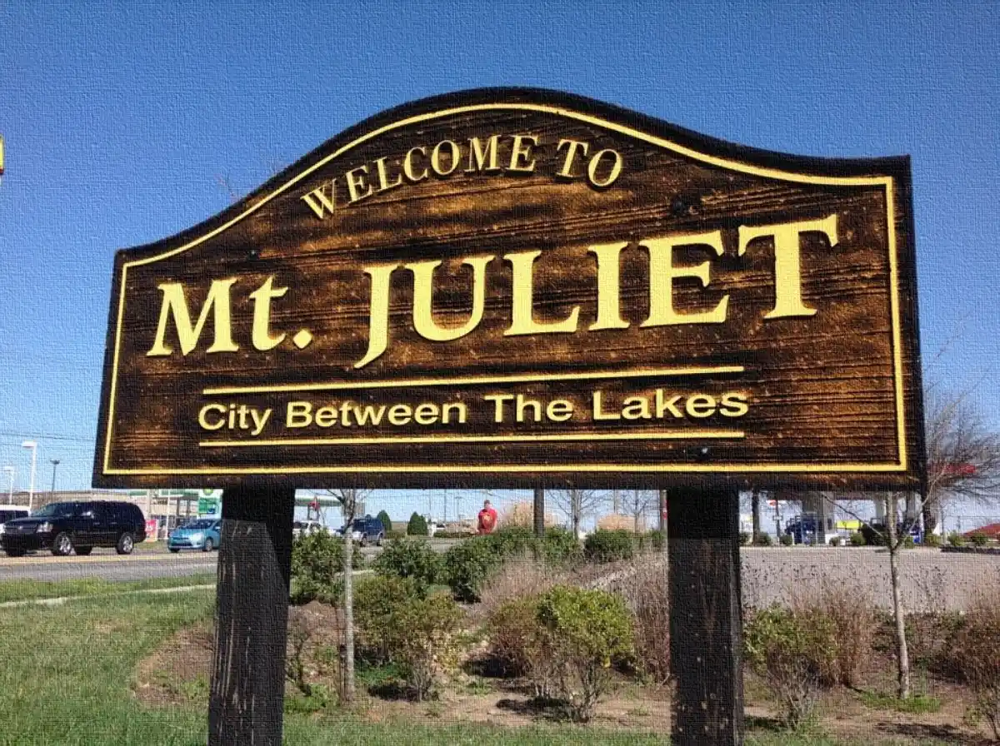

Private PPO plans, ACA comparisons, and straightforward guidance — for Mt. Juliet's growing community of families, self-employed professionals, and small business owners.
Mt. Juliet is one of the fastest-growing cities in Tennessee, and that growth brings a new wave of self-employed professionals, young families, and small business owners who need to figure out health insurance on their own terms. DC Insurance serves Wilson County residents with honest, no-pressure comparisons across every coverage option available to them.
As Mt. Juliet has grown, so has the number of residents who've left corporate jobs, started businesses, or moved from states with different insurance landscapes. That transition often leaves people on their own for the first time when it comes to health coverage.
Mt. Juliet's rapid growth means a lot of people are navigating self-employed coverage for the first time. We specialize in exactly that transition.
Plans that keep Vanderbilt Wilson County Hospital and nearby Nashville hospital systems in network — built for Wilson County residents.
Wilson County households span a wide income range. Whether ACA subsidies apply to your situation or private market is the better play, we compare both and give you a straight answer.
Many Mt. Juliet residents are young families navigating coverage for the first time. We help you protect everyone without overpaying.
Medically underwritten. Nationwide access. Often the best fit for healthy adults who don't qualify for ACA subsidies or want more flexibility.
Can work well at qualifying income levels. We compare honestly and tell you when ACA is — and isn't — the right call for your situation.
Accident, critical illness, and major illness protection that pays you directly — filling gaps your primary plan leaves open.
Term life insurance and income protection products that keep your family covered if you can't work.
We serve Mt. Juliet and surrounding Wilson County communities, including: Providence Marketplace area, Nonaville Road corridor, Lake Providence, Charlie Daniels Park area, and communities near Old Hickory Lake.
Zip codes: 37122, 37138
Mt. Juliet and Wilson County residents have access to ACA marketplace plans, private medically-underwritten PPO plans, and supplemental coverage. Given the range of incomes across the community, the right choice depends on your household — some residents benefit from ACA subsidies while others are better served by private market options. DC Insurance compares all three honestly.
It depends on your income and health situation. Residents who earn above ACA subsidy thresholds or who have had stable health histories often find private PPO plans competitive. Those with qualifying income may find meaningful ACA savings. DC Insurance pulls the numbers on both and gives you an honest comparison.
Yes. Denton Casey at DC Insurance works with Mt. Juliet residents and families throughout Wilson County. Consultations are free, no pressure, and typically take about 20 minutes.
DC Insurance serves Mt. Juliet and Wilson County directly. As an independent agent, Denton Casey compares private PPO plans, ACA options, and supplemental coverage — not just one carrier's products. Call 615-513-0313 or book a free review at dcinsuranceagency.com.
You deserve coverage built around your actual situation. Let's figure out what actually fits.

Photo: MtJulietEditor96, CC BY-SA 4.0, via Wikimedia Commons
20 minutes. Honest answers. No pressure. We compare every lane — ACA, employer, and private PPO — and tell you what actually fits.